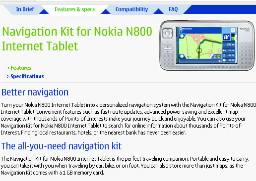
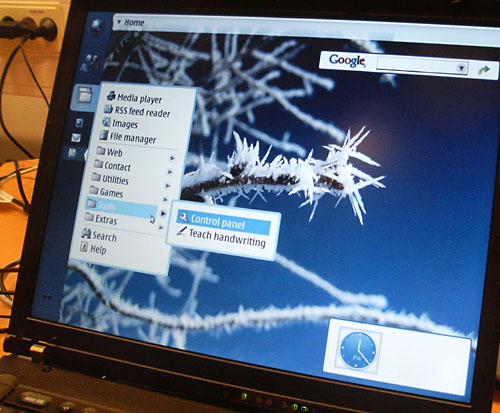
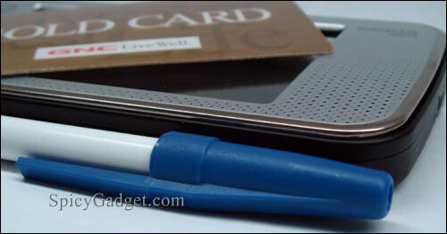
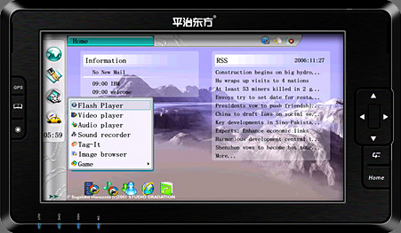

Author Archive for RogerS
Note: Links may not work or may take you to an archived page at the Internet Archive.
By RogerS February 13th, 2007
Categories: Internet tablet, Nokia 770, Nokia N800, browser and walkaround web
I asked Dr. Ari Jaaksi,
head of Open Source Development at Nokia and of internet tablet
development, “If you were outside Nokia developing an app for the
internet tablet, you — who knows the device’s capabilities better than
anyone else — what would you be working on?”
And he said, “I don’t know about the application. But aspects I’d
like to see in it . . . an app or service (it doesn’t have to be inside
the device, it could be on the network) that demands online, constant
access.”
This underscored something he had said a few minutes earlier when he
had described the experience of building a device from the ground up
that wasn’t a laptop, wasn’t a cellphone, wasn’t a PDA, but fit in the
space between these devices, more portable, better-screened and so on.
The internet tablet he described needed to be “really good for the
internet experience … [because it is for the person with a] strong and
active online life, [who] wants that internet experience wherever you
go.” The 770 and the N800, he pointed out, put that first, as those
other devices do not.
I’m always thinking about the Nokia 770 and N800 as computers, as
e-readers, as entertainment devices. The way Ari Jaaksi puts the
emphasis on the internet experience makes me trust his declaration that
the Flash and browser issues will be resolved. It’s the space where
these devices have to shine.
By RogerS February 13th, 2007
Categories: Internet tablet and Nokia N800
Don’t try this at home!
I put the loaner Nokia N800 I have in the back pocket of my
backpack. I carried the backpack with me whenever I left the house. I
did not surf or listen to music or read using the N800. I didn’t turn
it off, either.
Eight days later, when I pulled the internet tablet out of its sleeve, it
was glowing (as it always does when I pick it up) and one bar showed on
the battery.
How long will the battery charge last?
I don’t know. I can’t last longer than eight days!
By RogerS February 13th, 2007
Categories: Internet tablet and Nokia N800

Ari Jaaksi,
head of Open Source Development for Nokia and head of the Internet
Tablet development team, is in New York, as we can see from the shot
from his hotel room at 1 a.m. this morning*. A little birdie tells me
LinuxWorld has something to do with his arrival here. Nice picture from
a camera-phone (the Nokia N91).
_____________
* and posted at his blog.
By RogerS February 11th, 2007
Categories: Internet tablet, Nokia N800 and review
DL.TV (eg, Digital Life) has a 9:13 video segment
on the Nokia N800 Internet Tablet. What’s interesting to me is to see
the surfing capabilities and PDF viewing tested/demonstrated without
pause, going from one website to another so casually I lost track of
how many sites were visited. Someone who has not seen an N800
demonstrated gets a real sense of its speed here.
The video capabilities of the device are admired, not overly, but
acknowledging the difficulties and room for improvement (and no mention
of YouTube) and the comparisons are made to cellphones for surfing not
to laptops. The video VoIP coming is offhandedly described as a killer
app, which I really believe. And twice the tablet is called a toy. This
may be because the hosts aren’t really interested in it as a
general-purpose machine (”I believe, I’m not positive, but I believe
it’s built on top of Linux,” we’re told) and how one would go about
adding applications or running Python, say, doesn’t appear to have
shown up on their checklist of features to check out.
Nonetheless, their admiration shown is real, not feigned, based on what they perceive as the N800’s real capabilities.
Via Ring Nokia.
By RogerS February 10th, 2007
Categories: GPS, Internet tablet, Nokia N800, hardware and walkaround web

One thing the Nokia 770 and N800 Internet Tablets
have going for them is that they are the lowest-priced
smallest-full-screened general-purpose portable devices around.
Oh, you know what I mean — they run a full OS with an 800-pixel-wide
screen, they’re large-pocket-sized and they cost half the price of a
comparably capable UMPC.
So what does that mean for us internet tablet users?
Last year, I pointed out
that portable, electronic chess-playing devices cost a hundred dollars
or more. Putting Gnu Chess into the Nokia 770 and N800 Internet Tablets
obviated the need to buy a specialized chess device.
And no chess device has the incredible 225-pixel-per-inch resolution of the 770 or N800.
Half a dozen specialized e-reading devices — the Iliad, the Sony Librie, and others* — offer e-reading off a carryaround screen, a need that FBReader and Plucker Viewer** meet wonderfully well on the Nokia tablets, at a lower price.
Nokia is preparing to sell a Navicore GPS kit
for the N800*** — a Bluetooth GPS receiver, 2 GB worth of European
maps, a 1 GB memory card, car charger — so that your internet tablet’s
large screen can be utilized very effectively in a situation where the
visual really counts.
I know, do-it-yourself GPS-and-maps are already here. But
already-packaged and Nokia-supported sounds attractive for the
non-do-it-yourselfer. And I like the spoken directions — is that part
of the GPS receiver? You want it, obviously, for driving use.
The GPS/Internet Tablet combo plays to the strengths of the N800 —
there’s nothing it can do here that you can’t do also with a
Bluetoothed notebook computer, but who considers that practical? Oh, I
should add that the kit includes a car mount to hold the N800 in a
position the driver can easily view. Probably not an option you can
find for your notebook.
For us internet tablet users, the adaptability of the 770 and the
N800 means our devices keep becoming more useful and more versatile and
not less.
____
* Not to mention the original e-readers from the 20th century like the
RocketeBook (still sold today, rebranded eBookwise) and the Softbook
devices.
** And soon (hopefully) dotReader
*** I believe a kit for the 770 is already available from Navicore,
sans card and possibly requiring GPS receiver and maps to be purchased
separately
By RogerS February 9th, 2007
Categories: Hildon, Internet tablet, Nokia 770 and OS

Photo from Karoliina Salminen’s blog
of the Hildon UI running on a laptop computer at way beyond 800×480.
This is just a teaser of what is coming from Lucas Rocha, she notes.
Hm-m. This means future generations of internet tablets can be freed
from the hardware specifics of the Nokia 770. (I changed “internet
tablets” to lower-case, because I got to thinking how a UMPC might be
dual-bootable, plus there’s that H9 UMPC
we heard about earlier in the week.) Nokia could release a next-gen
tablet with such a different spec sheet that the 770’s end-of-life
could be extended as as the low-end, lowest-cost (and more restricted)
model.
I wonder too if this doesn’t lead to overlapping and smaller-than-full-size windows in Hildon too, an in-no-way-beloved limitation of the current UI.
OK, Lucas — let’s see more!
– Roger Sperberg
* * *
Added later: A post from Lucas gives more details and another photo, specifying the resolution as 1024×768.
By RogerS February 6th, 2007
Categories: Internet tablet, Nokia N800 and review

I ran across the Iron Cook’s Spicy Gadget Roll
blog this morning, where Cook (aka Phi Nguyen) has a lengthy
appreciation/review of the Nokia N800, complete with 35 minutes of
videos and 28 photos. The photo comparing the N800’s size to a
ballpoint pen and credit card was so clever, I’m showing it here rather
than just lifting the idea (I’ve cropped it slightly).
I also liked how Cook took six websites (engadget, digg)
and showed what you get with 800-pixel-wide viewing, and what you would
have to scroll to see. (Looking at all of these together shows how the
sites that write about small devices make sure their content is on the
left. Wish more sites would wake up to this need.)
So much video I didn’t get to watch it all, but that aspect puts
this at the top or near the top of my recommended sites to learn about
the N800.
– Roger Sperberg
By RogerS February 5th, 2007
Categories: Internet tablet, Maemo, Nokia 770, Nokia N800 and development

I didn’t anticipate that the first Asian-produced Maemo internet
tablet would meld features from the 770/N800 with UMPC traits — a 20 GB
hard drive and 7-inch size, for example. (Above, the H9 UMPC from Beijing Peace East Technology Development.)
Priced at $490
in lots of 500, the H9 does seem to be the first reasonably priced
competitor to the Nokia 770 and N800 Internet Tablets. No clues yet as
to whether it can handle the Asian languages that the Nokia devices
cannot.
Am I wrong in thinking that this sort of “follow on Nokia’s track”
is not only inevitable but desirable? It seems to me that the
open-source movement is built on the core tenet that people have
different visions of how to get the ideal feature set and you have to
allow them to build on what you’ve done or else we’re all stuck. So
Nokia builds on Debian and Beijing Peace East builds on Maemo.
(Via pocketables.net, engadget and our ITT forums. Thanks to Hedgecore for the heads-up and company link!)
Added later — I shouldn’t gloss over the
significant inclusion of GPS built into the H9, especially in light of
considering the “ideal” feature set.
By RogerS February 1st, 2007
Categories: Internet tablet and Maemo
Just want to spread the word that links at Planet Maemo aren’t working for posts at Blogger-based blogs (from thoughtfix and Ari Jaaksi, off the top of my head). Appears to be related to the change in how blogs are linked now to gmail accounts.
This impacts Bloglines on the internet tablet too, with resolution
dependent on the Blogger/Google folk straightening out code issues, it
seems (as per this message in the ITT forums).
By RogerS January 28th, 2007
Categories: Internet tablet, Nokia 770, Nokia N800 and observations
Why the obsession to make the Nokia N800 Internet Tablet be a computer (see, for example, Trusted Reviews)? Or a PDA? Or a cellphone? Allegedly this is because people want to carry fewer devices, hence the upswing in convergence.
But is that really where we are headed?
If you go back a couple generations, there was a time when every
family had one television, and before that one radio. And then as they
became less expensive, more were added and maybe you even had one per
person. Radios are now so cheap, we have one for each possible use —
one in each car, one in each bedroom (attached to a clock) and in the
kitchen, one in the home stereo system, one in each boombox and in each
portable tape or CD player, special ones built on a clip just for going
jogging.
In my own household — two adults, two children — we
have ten radios. They’re all optimized to a single situation, and we
think that’s right. We don’t see this as violating some principle of
multiple use (or minimum use either — how many minutes a week is a
shower radio on, anyway? Or the guestroom clock-radio?). We follow the
“specific devices for specific needs” principle.
And that applies to computers too. To tablets.
You know, if I can access my files on the network, and I use
web-apps, why do I care about “synching” my internet tablet with a PC?
Just as I want that clip-radio for jogging, I want to carry a small but
suitable device for surfing, reading and, you know, anything that might
come up — a see-me voip call, some work, some music, a game. But, heck,
at other times, I want that laptop. And at still other times, I carry some index cards and a one-dollar Optiflow pen and leave the tablet at home.
Soon enough today’s internet tablets will sell for
$50 - $100, and we’ll have a slew of them. (Yes, we’ll have some
extraordinary $400 devices then, too.) It’ll be access to the network
that they each provide, so it won’t matter which one I pick up: my information
won’t be quarantined in separate devices constantly falling
out-of-synch with every other device I use. And, likely as not, the
capabilities will be downloaded from the network too, or on the network entirely.
Our cellphones and our internet tablets are just the first devices to be pocketable and derive their worth from the network — no connect, no use
— while our expectations are driven by the old-paradigm devices of
yesteryear (eg, 2005). I mean, after all, would you have even
considered buying a PDA back in the day if it didn’t work offline? And,
in the end, isn’t that pretty much the way the internet tablet is?
That’s where we’re headed, I think. Not there yet, by any stretch of
the imagination, and I yield to no man in counting on the off-network
apps in my own 770. But I can feel it coming, every time I reach over
to check the alarm on my clock-radio and see the internet tablet
resting on the bedside table. Soon enough I’ll have a bedside tablet,
and a breakfast table tablet and a tablet in the car that always lives
there, like the radio.
— Roger Sperberg
|
|
|


{kind=link}
{kind=link}
{kind=link}